Marshall.D.Teach (OP16-080)Marshall.D.Teach (OP16-080)
Marshall.D.Teach (OP16-080)Marshall.D.Teach (OP16-080)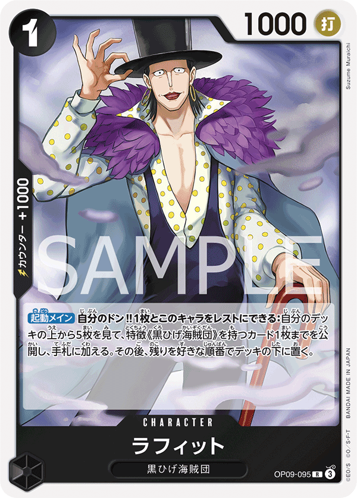
×4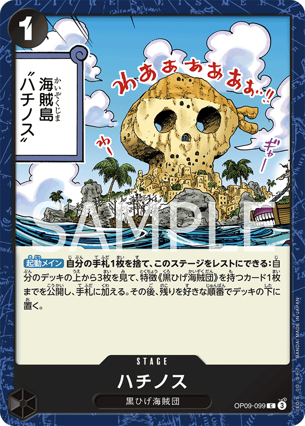
×4×1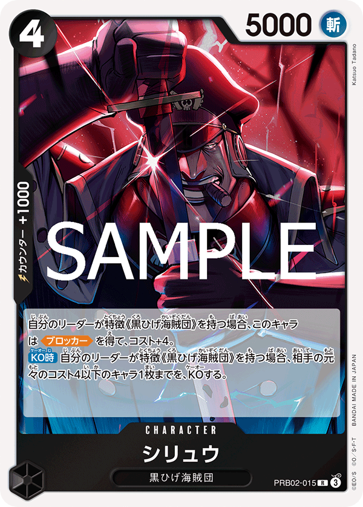
×2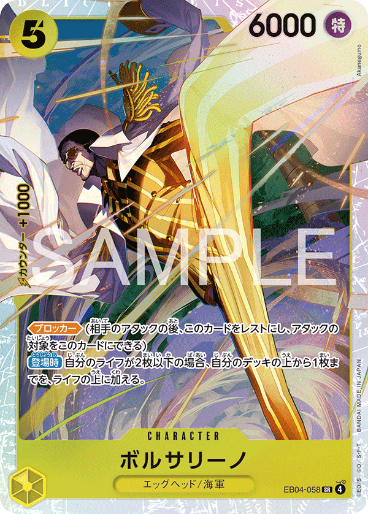
×4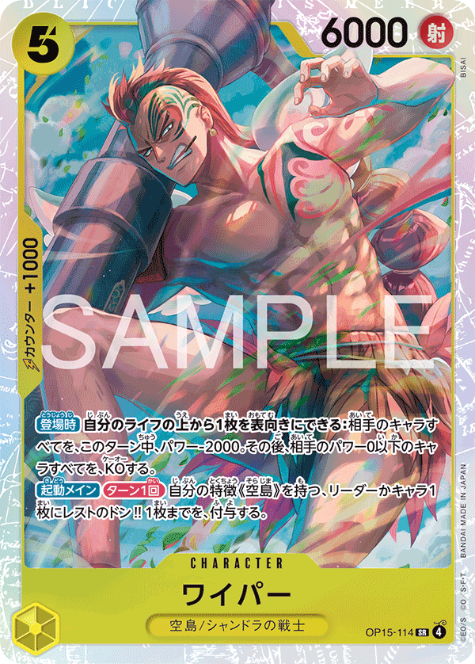
×4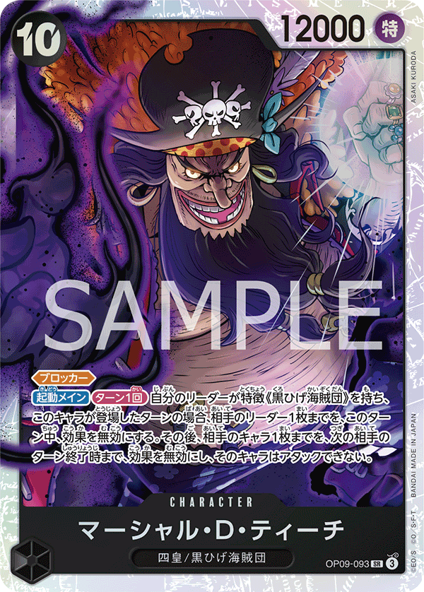
×3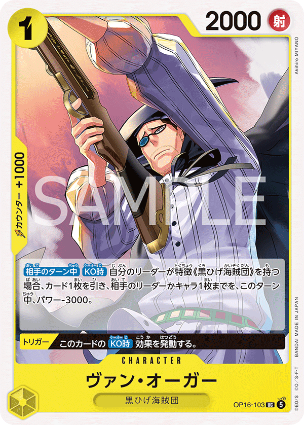
×4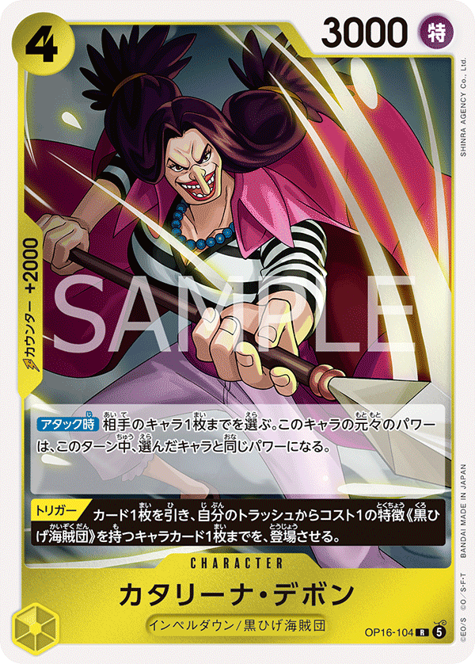
×4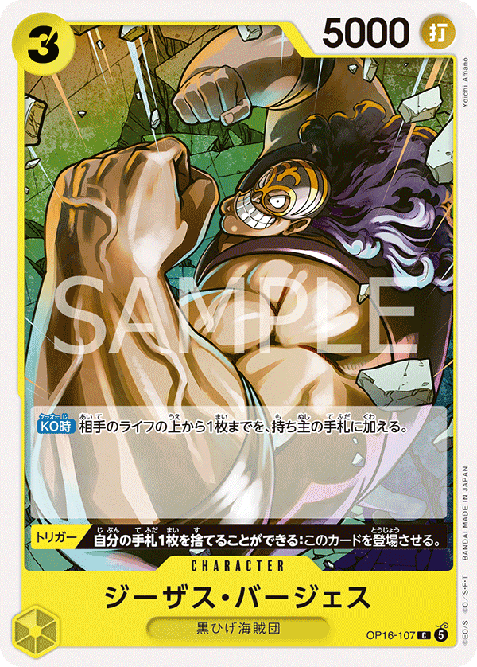
×4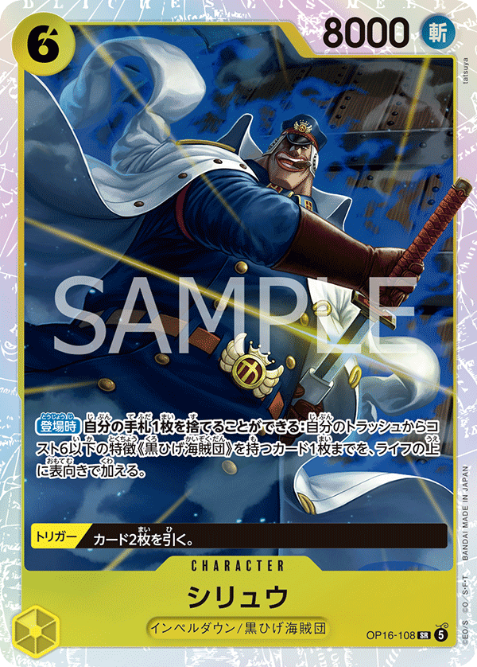
×4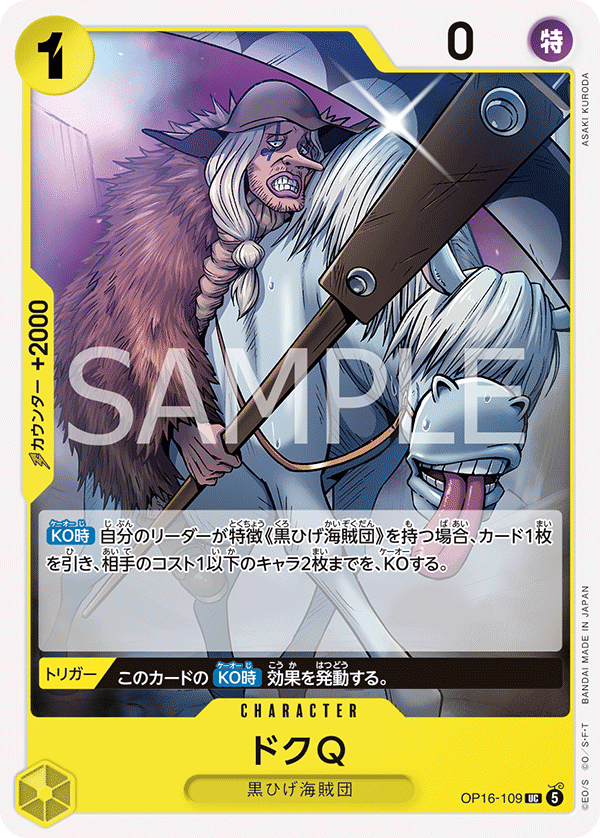
×4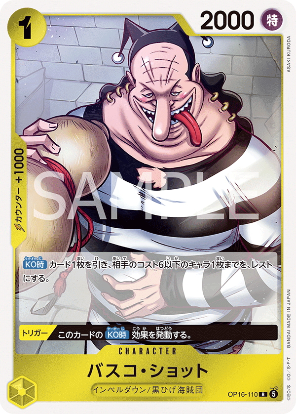
×2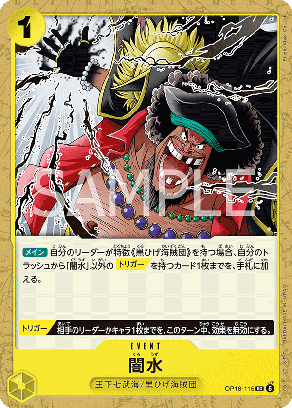
×2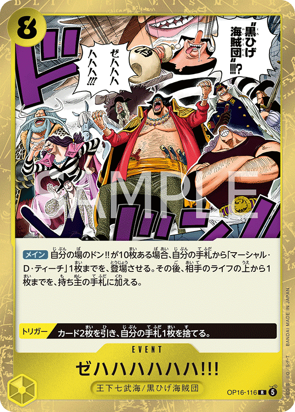
×1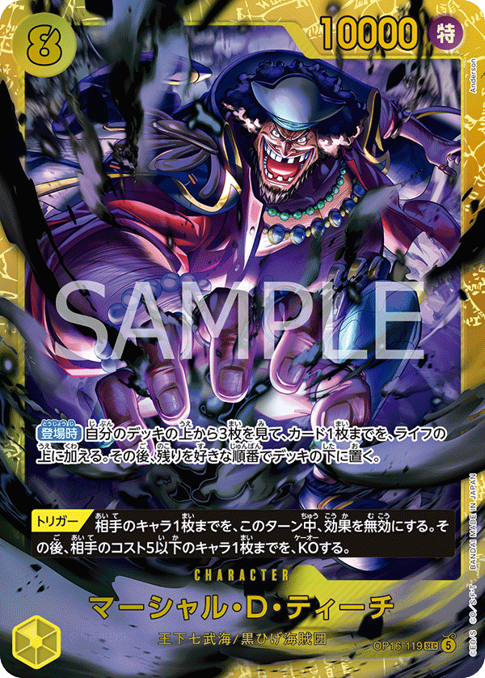
×4
| Turn | Phase | Expected opp | My response | Cards |
|---|---|---|---|---|
| T1 | opp_turn | Shanks plays 1-cost setup like OP09-002 Uta (2000 base). No attack T1. | Pass or play OP09-095 Laffitte (1c, 1000) as a Trigger-tagged body that can be discarded later to redirect attacks. | OP09-095 |
| T2 | my_turn | On opponent's T2 they'll deploy a 2-3 cost (OP09-011 Hongo 3c 3000) and may swing leader. Shanks leader at 5000 HITS Teach 5000 via tie. | Deploy OP16-119 or OP16-104 (Trigger-tagged cheap bodies). Swing Teach leader 5000 into Shanks leader 5000 — ties via attacker wins, you hit Shanks. | OP16-119 OP16-104 OP09-095 |
| T3 | my_turn | Shanks deploys OP12-008 Shanks (4c, 6000) or sets up Yasopp. Leader swing 5000 HITS via tie; +1 DON pump = 6000 HITS clearly. | Play OP09-099 Fullalead or OP16-108 to develop board. Redirect the 5000 leader swing by trashing a [Trigger] card via Teach's leader effect — saves 1 life. | OP09-099 OP16-108 OP16-104 |
| T4 | opp_turn | OP09-013 Yasopp SP (5c, 6000) deploys with On Play trash. Shanks leader + 1 DON = 6000. Yasopp swing 6000 HITS Teach clearly. | Redirect Yasopp's 6000 swing to a Trigger-discard. Teach 5000 leader + Trigger redirect = swing eaten by a Blackbeard Pirates body or sent to leader anyway but you've burned only 1 hand card. | OP09-095 OP16-119 OP16-104 |
| T5 | my_turn | Shanks deploys OP09-013 Yasopp SP or OP12-008. Multi-attack — usually 1-2 (median 2). | Play OP15-114 Wyper (5c, 6000) or stack a 4-cost. Swing Teach leader 5000 + 2 DON = 7000 into Shanks 5000 leader for clear hit. Trigger-redirect any 7000+ swing back at leader. | OP15-114 OP16-108 EB04-058 |
| T6 | my_turn | Benn.Beckman SP OP09-009 (7c, 7000) deploys or Shanks SP OP06-007 (10c, 12000) lands. Beckman 7000 HITS clearly. | Play OP09-093 Marshall.D.Teach (10c, 12000) — your finisher. Swing 12000 into a Shanks body for clean KO; force counter stack. | OP09-093 PRB02-015 |
| T7 | opp_turn | OP06-007 Shanks SP (10c, 12000) closes. 12000 swing HITS clearly; needs +8000 counter stack to neutralize. | Trigger-redirect the 12000 swing to a Blackbeard Pirates character — saves leader. Counter remaining swings: Teach 5000 + 1 DON + 2000 counter (OP09-011 Hongo) = 8000, holds 6-7000 swings. | OP09-095 OP09-011 OP09-093 |
| Turn | Phase | Expected opp | My response | Cards |
|---|---|---|---|---|
| T1 | opp_turn | Shanks plays OP09-002 Uta (1c) or passes. No attack T1. | Develop OP09-095 Laffitte (1c) for cheap Trigger value. | OP09-095 |
| T2 | my_turn | Shanks leader 5000 swings — HITS Teach 5000 via tie. 1-2 attacks per turn (median 1). | You have 4 DON — deploy a 3-cost body (Hongo OP09-011 if splashed) or develop OP16-104. Swing Teach 5000 leader into Shanks for trade. | OP16-104 OP16-119 |
| T3 | opp_turn | OP12-008 Shanks (4c, 6000) deploys; leader swing at 6000 (+1 DON). | Redirect the 6000 leader swing via Trigger-discard. Teach 5000 + counter math: Teach 5000 + 1000 counter = 6000 vs 6000 = TIE, attacker wins — needs +2000 to actually fail. | OP09-095 OP16-108 |
| T4 | my_turn | OP09-013 Yasopp SP (5c, 6000) on board swinging 6000. Multi-attack (median 2). | Deploy OP15-114 Wyper (5c, 6000) or EB04-058 Borsalino (5c, 6000). Swing your 6000 body into Shanks 5000 leader — clean hit. | OP15-114 EB04-058 OP16-108 |
| T5 | my_turn | Benn.Beckman SP OP09-009 (7c, 7000) lands. | Play PRB02-015 Shiryu (4c, 5000) for board presence. Swing Teach 5000 + 2 DON = 7000 into Shanks leader, force counter spend. | PRB02-015 OP15-114 |
| T6 | my_turn | OP06-007 Shanks SP (10c, 12000) or stacked attackers. | Play OP09-093 Marshall.D.Teach (10c, 12000). Swing into their biggest threat (Beckman 7000 or Shanks SP 12000 = tie via attacker wins). | OP09-093 |
| T7 | opp_turn | Shanks pushes lethal with stacked attacks. | Trigger-redirect the largest swing. Counter the rest: Teach 5000 + 1000 counter = 6000 holds 5000-6000 swings (tie still attacker wins, so need +2000). | OP09-095 OP09-099 |

| Turn | Phase | Expected opp | My response | Cards |
|---|---|---|---|---|
| T1 | my_turn | Ace plays 1-cost setup. No attack T1. | Play OP09-095 Laffitte (1c) Trigger body. | OP09-095 |
| T2 | opp_turn | Ace leader 5000 swings (HITS Teach 5000 via tie). 1 attack T2. | Redirect or take 1. At 4 life dropping to 3 is acceptable — preserve [Trigger] for T5+ burn waves. | OP09-095 |
| T3 | my_turn | Ace deploys a 4-cost fire body. | Develop OP09-099 Fullalead or OP16-108. Swing Teach 5000 + 1 DON = 6000 into Ace 5000 leader for clean hit. | OP09-099 OP16-108 |
| T4 | opp_turn | Ace pushes multi-attack with burn events. Multi-attack (median 2). | Counter 5000-6000 swings: Teach 5000 + 2000 counter (Hongo OP09-011) = 7000 > 6000 = fail. Redirect any 7000+ swing. | OP09-011 OP09-095 |
| T5 | my_turn | Ace stacks board with mid-cost burn bodies. | Play OP15-114 Wyper (5c, 6000). Swing 6000 into Ace 5000 leader for hit. Press life. | OP15-114 EB04-058 |
| T6 | my_turn | Ace pushes lethal-setup with burn + body attacks. | Play OP09-093 Marshall.D.Teach (10c, 12000). Force counter or trade for board. | OP09-093 |
| T7 | opp_turn | Ace pushes lethal. | Redirect the most threatening swing. Counter 6000s: Teach 5000 + 2000 counter = 7000 > 6000 = fail. | OP09-095 OP09-011 |
| Turn | Phase | Expected opp | My response | Cards |
|---|---|---|---|---|
| T1 | opp_turn | Ace plays 1-cost setup. No attack T1. | Pass. | |
| T2 | my_turn | Ace leader 5000 swings (HITS Teach 5000 via tie). | Deploy OP16-119 or OP16-104. Swing Teach 5000 into Ace 5000 for trade. | OP16-119 OP16-104 |
| T3 | opp_turn | Ace mid-cost body lands. 6000 swing. | Redirect or counter 6000 swing — Teach 5000 + 2000 counter = 7000 > 6000 = fail. | OP09-095 OP09-011 |
| T4 | my_turn | Multi-attack pressure (median 2). | Play EB04-058 Borsalino (5c, 6000). Swing 6000 into Ace 5000 leader. | EB04-058 OP15-114 |
| T5 | my_turn | Ace burn event + body attack stacks. | Stack pressure — Teach 5000 + 2 DON = 7000 leader swing + 6000 body. Ace at 3-4 life. | OP15-114 PRB02-015 |
| T6 | my_turn | Ace pushes lethal setup. | Play OP09-093 Marshall.D.Teach (10c, 12000). Swing 12000 into their finisher body for KO. | OP09-093 |
| T7 | opp_turn | Ace burn + multi-attack for lethal. | Redirect the largest swing. Counter the rest: Teach 5000 + 2000 = 7000 > 6000 = fail. | OP09-095 OP09-011 |

| Turn | Phase | Expected opp | My response | Cards |
|---|---|---|---|---|
| T1 | my_turn | Luffy plays 1-cost setup. No attack T1. | Play OP09-095 Laffitte (1c) Trigger body. | OP09-095 |
| T2 | opp_turn | Luffy leader 5000 swings (HITS Teach 5000 via tie). | Redirect or take 1. Preserve [Trigger] for T5+ multi-attack waves. | OP09-095 |
| T3 | my_turn | Luffy deploys a 4-cost Green/Blue body. | Develop OP09-099 Fullalead or OP16-108. Swing Teach 5000 + 1 DON = 6000 into Luffy 5000 leader. | OP09-099 OP16-108 |
| T4 | opp_turn | Multi-attack (median 2). Luffy pushes board + leader swings. | Counter 6000 swings: Teach 5000 + 2000 counter = 7000 > 6000 = fail. Redirect 7000+ swings. | OP09-011 OP09-095 |
| T5 | my_turn | Luffy stacks bounce/rest tools. | Play OP15-114 Wyper (5c, 6000). Swing 6000 into Luffy 5000 leader for hit. | OP15-114 EB04-058 |
| T6 | my_turn | Luffy pushes lethal setup with multi-body attack. | Play OP09-093 Marshall.D.Teach (10c, 12000). Swing into their biggest body for KO. | OP09-093 |
| T7 | opp_turn | Luffy multi-attack for lethal. | Redirect the biggest swing. Counter remaining 6000s: Teach 5000 + 2000 counter = 7000 > 6000 = fail. | OP09-095 OP09-011 |
| Turn | Phase | Expected opp | My response | Cards |
|---|---|---|---|---|
| T1 | opp_turn | Luffy plays 1-cost setup. No attack T1. | Pass. | |
| T2 | my_turn | Luffy leader 5000 swings (HITS Teach 5000 via tie). | Deploy OP16-119 or OP16-104. Swing Teach 5000 into Luffy 5000 for trade. | OP16-119 OP16-104 |
| T3 | opp_turn | Luffy mid-cost body. 6000 swing. | Redirect or counter — Teach 5000 + 2000 counter = 7000 > 6000 = fail. | OP09-095 OP09-011 |
| T4 | my_turn | Multi-attack (median 2). Bounce-tool pressure. | Play EB04-058 Borsalino (5c, 6000). Swing 6000 into Luffy 5000 leader for hit. | EB04-058 OP15-114 |
| T5 | my_turn | Luffy stacks bounce-rest disruption. | Stack pressure with Teach 5000 + 2 DON = 7000 leader + 6000 body. | OP15-114 PRB02-015 |
| T6 | my_turn | Luffy lethal setup with multi-body. | Play OP09-093 Marshall.D.Teach (10c, 12000). Swing into biggest threat for KO. | OP09-093 |
| T7 | opp_turn | Luffy multi-attack lethal push. | Redirect the largest. Counter the rest: Teach 5000 + 2000 counter = 7000 > 6000 = fail. | OP09-095 OP09-011 |
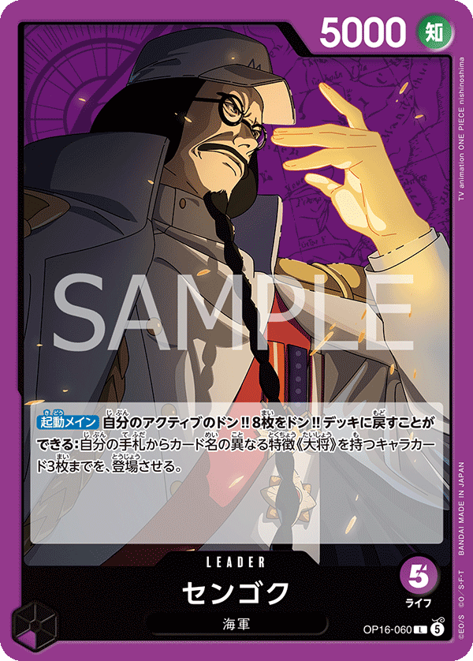
| Turn | Phase | Expected opp | My response | Cards |
|---|---|---|---|---|
| T1 | my_turn | Sengoku plays 1-cost setup. No attack T1. | Play OP09-095 Laffitte (1c) Trigger body. | OP09-095 |
| T2 | opp_turn | Sengoku leader 5000 swings (HITS Teach 5000 via tie). 1 attack T2. | Redirect or take 1. Sengoku has 5 life — don't waste early Trigger cards if the swing is just 5000. | OP09-095 |
| T3 | my_turn | Sengoku deploys a 4-cost body and threatens board control. | Develop OP16-108 or OP09-099 Fullalead. Swing Teach 5000 + 1 DON = 6000 into Sengoku 5000 leader. | OP09-099 OP16-108 |
| T4 | opp_turn | Sengoku pushes board with mid-cost bodies + leader swing. Multi-attack (median 1-2). | Counter 6000 swings: Teach 5000 + 2000 counter = 7000 > 6000 = fail. Redirect anything 7000+. | OP09-011 OP09-095 |
| T5 | my_turn | OP16-065 Sakazuki (7c, 8000) deploys as the midgame threat. | Play OP15-114 Wyper (5c, 6000). Swing 6000 into Sengoku 5000 leader for hit. | OP15-114 EB04-058 |
| T6 | my_turn | Sakazuki swings 8000 at Teach. 8000 HITS clearly. | Play OP09-093 Marshall.D.Teach (10c, 12000). Swing 12000 into Sakazuki 8000 for clean KO. | OP09-093 |
| T7 | opp_turn | Sengoku pushes lethal with Sakazuki + leader stacks. | Redirect Sakazuki's 8000 swing — Teach 5000 + 1 DON + 2000 counter = 8000 vs 8000 = TIE, attacker wins; need +3000 counter total to fail. Redirect is cheaper. | OP09-095 OP09-011 |
| Turn | Phase | Expected opp | My response | Cards |
|---|---|---|---|---|
| T1 | opp_turn | Sengoku plays 1-cost setup. No attack T1. | Pass. | |
| T2 | my_turn | Sengoku leader 5000 swings (HITS Teach 5000 via tie). | Deploy OP16-119 or OP16-104. Swing Teach 5000 into Sengoku 5000 leader for trade. | OP16-119 OP16-104 |
| T3 | opp_turn | Sengoku deploys 4-cost body + leader swings. | Redirect or counter 6000 swings — Teach 5000 + 2000 counter = 7000 > 6000 = fail. | OP09-095 OP09-011 |
| T4 | my_turn | Multi-attack pressure (median 2). | Play EB04-058 Borsalino (5c, 6000). Swing 6000 into Sengoku 5000 leader. | EB04-058 OP15-114 |
| T5 | my_turn | OP16-065 Sakazuki (7c, 8000) lands. | Stack pressure — Teach 5000 + 2 DON = 7000 leader + 6000 body. Force Sengoku to counter. | OP15-114 PRB02-015 |
| T6 | my_turn | Sakazuki attacks 8000. | Play OP09-093 Marshall.D.Teach (10c, 12000). Swing into Sakazuki 8000 for clean KO (12000 vs 8000). | OP09-093 |
| T7 | opp_turn | Sengoku lethal push with Sakazuki + leader. | Redirect Sakazuki's 8000 swing. Counter leader 6000: Teach 5000 + 2000 counter = 7000 > 6000 = fail. | OP09-095 OP09-011 |

| Turn | Phase | Expected opp | My response | Cards |
|---|---|---|---|---|
| T1 | my_turn | Yamato plays 1-cost setup. No attack T1. | Play OP09-095 Laffitte (1c) — protect your Trigger count. | OP09-095 |
| T2 | opp_turn | Yamato leader 5000 swings (HITS Teach 5000 via tie). 1 attack T2. | Redirect with [Trigger] card OR take 1 life. Teach at 4 life means taking 1 leaves 3 — early life trade is acceptable. | OP09-095 OP16-119 |
| T3 | my_turn | Yamato deploys OP16-082 Kin'emon (4c, 6000). | Develop OP09-099 Fullalead or OP16-108. Swing Teach 5000 + 1 DON = 6000 into Yamato 5000 leader for clean hit. | OP09-099 OP16-108 |
| T4 | opp_turn | OP16-082 Kin'emon swings 6000 at Teach. Multi-attack (median 1-2). 6000 HITS clearly. | Counter 6000: Teach 5000 + 2000 counter (OP09-011 Hongo) = 7000 > 6000 = fail. Or redirect with [Trigger]. | OP09-011 OP09-095 |
| T5 | my_turn | OP16-098 Yamato character (6c, 5000) on board. | Play OP15-114 Wyper (5c, 6000) or EB04-058 Borsalino. Swing your 6000 into Yamato 5000 leader for hit. | OP15-114 EB04-058 |
| T6 | my_turn | Yamato pushes board with stacked attackers. | Play OP09-093 Marshall.D.Teach (10c, 12000). Swing into Kin'emon (6000) for KO — 12000 vs 6000 trivially. | OP09-093 |
| T7 | opp_turn | OP16-085 Kouzuki Momonosuke (9c, 6000) or stacked Yamato body swings. | Redirect the largest swing. Counter the 6000s: Teach 5000 + 2000 counter = 7000 > 6000 = fail. | OP09-095 OP09-011 |
| Turn | Phase | Expected opp | My response | Cards |
|---|---|---|---|---|
| T1 | opp_turn | Yamato plays 1-cost setup. No attack T1. | Pass. | |
| T2 | my_turn | Yamato leader 5000 swings (HITS Teach 5000 via tie). | You have 4 DON — deploy OP16-119 or OP16-104. Swing Teach 5000 into Yamato 5000 for trade hit. | OP16-119 OP16-104 |
| T3 | opp_turn | OP16-082 Kin'emon (4c, 6000) lands and may swing. | Redirect or counter Kin'emon's 6000: Teach 5000 + 2000 counter = 7000 > 6000 = fail. | OP09-095 OP09-011 |
| T4 | my_turn | Multi-attack (median 2). Yamato character + leader. | Play EB04-058 Borsalino or OP15-114 Wyper. Swing 6000 into Yamato leader 5000 — clean hit. | EB04-058 OP15-114 |
| T5 | my_turn | OP16-098 Yamato character (6c, 5000) lands. | Stack pressure — swing Teach 5000 + 2 DON = 7000 leader + 6000 body. Yamato at 3-4 life. | OP15-114 PRB02-015 |
| T6 | my_turn | Yamato pushes board with OP16-085 setup. | Play OP09-093 Marshall.D.Teach (10c, 12000). Swing 12000 into their biggest threat. | OP09-093 |
| T7 | opp_turn | Yamato finishers swing at Teach. | Redirect the largest. Counter 6000s: Teach 5000 + 2000 = 7000 > 6000 = fail. Manage hand to keep at least 1 [Trigger] for follow-up. | OP09-095 OP09-011 |
| Turn | Phase | Expected opp | My response | Cards |
|---|---|---|---|---|
| T1 | my_turn | Opp plays OP09-095 Laffitte (1c, 1000) or passes. | Play OP09-095 Laffitte as a Trigger-tagged body for later redirect ammo. | OP09-095 |
| T2 | opp_turn | Opp Teach leader 5000 swings — HITS Teach 5000 via tie. 1 attack T2. | Trigger-redirect by trashing a [Trigger] card → attack hits a Blackbeard Pirates body instead of leader. Saves 1 life. | OP09-095 OP16-119 |
| T3 | my_turn | Opp deploys OP16-108 or OP09-099 Fullalead and may swing leader. | Develop OP16-108 (4c) or OP09-099 Fullalead (3c). Swing Teach 5000 + 1 DON = 6000 into opp Teach 5000 leader for clean hit. | OP16-108 OP09-099 OP16-104 |
| T4 | opp_turn | EB04-058 Borsalino (5c, 6000) lands and swings 6000. Multi-attack (median 1-2). | Counter 6000 swing: Teach 5000 + 2000 counter = 7000 > 6000 = fail. Or redirect. | OP09-011 OP09-095 |
| T5 | my_turn | Opp plays OP15-114 Wyper (5c, 6000) or PRB02-015 Shiryu. | Play OP15-114 Wyper. Swing your 6000 body into opp Teach 5000 leader — clean hit. | OP15-114 EB04-058 |
| T6 | my_turn | Opp lands OP09-093 Teach (10c, 12000) at this turn or next. | Play OP09-093 Marshall.D.Teach (10c, 12000) yourself — match their finisher. 12000 swings KO their Wyper/Borsalino on contact. | OP09-093 |
| T7 | opp_turn | Opp swings OP09-093 Teach 12000 at your leader. | Trigger-redirect the 12000 swing to your own OP09-093 (12000 vs 12000 = tie attacker wins, your Teach KO'd but leader safe). Counter math: leader 5000 + 1000 + 2000 = 8000, doesn't reach. | OP09-095 OP09-093 |
| Turn | Phase | Expected opp | My response | Cards |
|---|---|---|---|---|
| T1 | opp_turn | Opp plays OP09-095 Laffitte. No attack T1. | Pass — you go first on T2 with 4 DON. | OP09-095 |
| T2 | my_turn | Opp Teach leader 5000 swings (HITS via tie). | Deploy OP16-119 or OP16-104 Trigger-tagged body. Swing Teach 5000 into opp Teach 5000 for trade hit. | OP16-119 OP16-104 |
| T3 | opp_turn | Opp deploys OP16-108. Leader swing 5000-6000. | Redirect or counter 6000 swing — Teach 5000 + 2000 counter = 7000 > 6000 = fail. | OP09-095 OP16-108 |
| T4 | my_turn | EB04-058 Borsalino (5c, 6000) or OP15-114 Wyper (5c, 6000) hit. | Play EB04-058 Borsalino or OP15-114 Wyper yourself. Swing 6000 into opp Teach 5000 leader for hit. | EB04-058 OP15-114 |
| T5 | my_turn | Multi-attack (median 2). Opp at 2-3 life. | Stack pressure — swing Teach 5000 + 2 DON = 7000 leader + 6000 body. Force counter spend. | OP15-114 EB04-058 PRB02-015 |
| T6 | my_turn | Opp deploys OP09-093 Teach (10c, 12000). | Play your OP09-093 Marshall.D.Teach. Match their finisher. | OP09-093 |
| T7 | opp_turn | Opp pushes lethal with OP09-093 + Wyper + leader. | Redirect the 12000 OP09-093 swing. Counter the 6000 Wyper/leader: Teach 5000 + 2000 counter = 7000 > 6000 = fail. | OP09-095 OP09-011 |